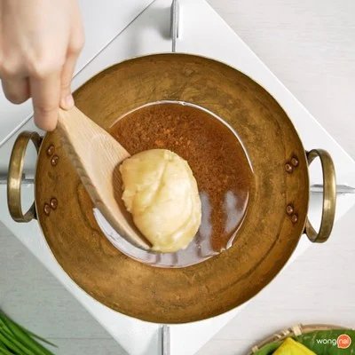
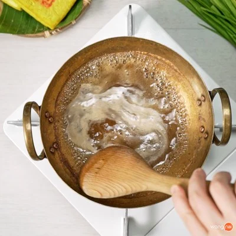
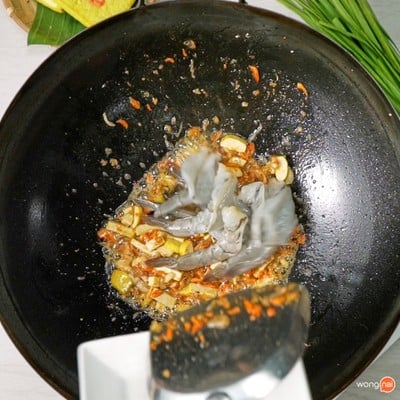
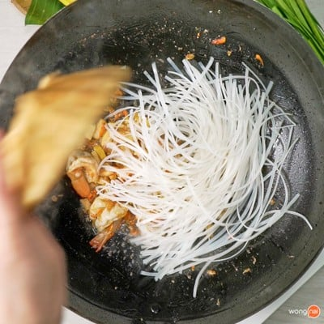
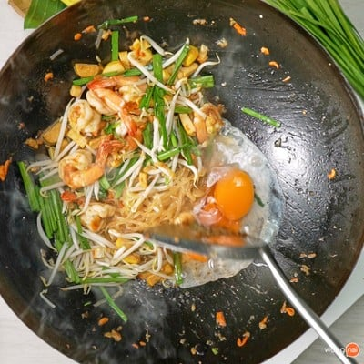

"ผัดไทยกุ้งสด : เมนูอาหารไทยยอดนิยม
เมนู "ผัดไทยกุ้งสด" เป็นหนึ่งในเมนูอาหารไทยยอดนิยมที่อยู่คู่ครัวคนไทยมานานแถมยังโด่งดังไปทั่วโลกอีกต่างหากค่ะ เป็นเมนูที่ทุกคนควรจะเรียนรู้วิธีทำไว้ เผื่อได้มีโอกาสโชว์ฝีมือทำอาหารไทยให้ใครได้ลองกิน ใครที่มองหาสูตรผัดไทยเด็ด ๆอยู่ล่ะก็ ขอเชิญทางนี้เลยค่ะบอกเลยว่าสูตรนี้รสชาติเข้มข้นโดนใจสุด ๆ !ที่สำคัญทำไม่ยากอีกต่างหาก
| เวลาเตรียมวัตถุดิบ | เวลาปรุงอาหาร | แคลอรี่เมนูนี้ | |
|
|
|
|
|
|---|
- วัตถุดิบผัดไทย
- มันกุ้ง 1 ช้อนโต๊ะ
- กุ้งแห้ง 1 ช้อนโต๊ะ
- ไชโป๊ 1 ช้อนโต๊ะ
- เต้าหู้แข็งหั่นแท่ง 3 ช้อนโต๊ะ
- กุ้งสด 8 ตัว
- เส้นผัดไทยแช่น้ำ 150 กรัม
- น้ำผัดไทย 2 ทัพพี
- ถั่วงอก(สำหรับทานเคียง)
- กุ้ยช่าย(สำหรับทานเคียง)
- พริกป่น(สำหรับทานเคียง)
- มะนาว(สำหรับทานเคียง)
- วัตถุดิบน้ำผัดไทย
- น้ำตาลมะพร้าว 200 กรัม
- น้ำปลา 200 มิลลิลิตร
- น้ำมะขามเปียก 200 มิลลิลิตร
- ขั้นตอนการทำซอสผัดไทย
- เคี่ยวน้ำผัดไทย โดยการนำน้ำตาลมะพร้าว น้ำปลา และมะขามเปียกตั้งไฟเคี่ยวให้ละลายเข้ากัน แล้วพักไว้ 
- ใส่น้ำตาลลงไปเคี่ยวกับน้ำปลาและน้ำมะขามเปียก 
- เคี่ยวจนส่วนผสมละลายเข้ากัน
- ขั้นตอนการผัดเครื่อง
- ตั้งกระทะใส่น้ำมัน ใส่มันกุ้ง หอมแดง ไชโป๊ และเต้าหู้ผัดให้สุกหอม จากนั้นใส่กุ้งลงไปผัด เมื่อกุ้งสุกดีใส่เส้นผัดไทยลงไป ผัดให้เส้นสุกนุ่ม แล้วใส่ซอสลงไปผัดให้เข้ากัน 
- ผัดเครื่องให้หอมแล้วใส่กุ้ง 
- ใส่เส้นผัดไทยลงไปผัด
- คลุกกับไข่และจัดเสิร์ฟ
- หลังจากผัดเส้นเข้ากับน้ำซอสดีแล้ว จากนั้นใส่ถั่วงอก ใบกุ้ยช่าย ตอกไข่เป็ดตามลงไป รอจนไข่เป็ดเริ่มสุก จึงผัดให้ทุกอย่างเข้ากัน ตักขึ้นจัดเสิร์ฟ พร้อมเครื่องสำหรับทานเคียง
- 
- ใส่ไข่เป็ดตบท้าย
- แค่นี้ก็เรียบร้อย!

ขั้นตอนง่าย ๆ เพียงเท่านี้ เราก็มีผัดไทยกุ้งสด ไว้ทำทานเองได้แล้วยังสามารถนำไปต่อยอดทำเป็นอาชีพเสริมได้อย่างง่ายดาย
 >
>